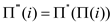
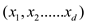
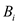
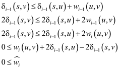

a)
Consider the boxes with dimensions: and
.
Suppose there exists a permutation  such that
for and there
exists a permutation such that
for so that
x nests inside y and y nests inside
z.
such that
for and there
exists a permutation such that
for so that
x nests inside y and y nests inside
z.
Construct a permutation , where . Then for , and so x nests inside z.
b)
A box X with sorted dimensions nests inside a box Y with the sorted dimensions and only if for that is, the dimensions of x are component-wise less than the increasing sequence of dimensions of y.
To prove that a one-dimensional box nests inside another or not, do the following:
• Sort the dimensions of each box from the longest to shortest and the sorting can be done in time.
• Since, each box is compared sequentially such that in time, so the orientation of the boxes is possible.
c)
To find the longest sequence of boxes the algorithm is as follows:
• Sort each box in time using radix sort and find the relations to prove that the boxes are nested inside each other. If the box  nests inside then draw the arrow from to otherwise do vice-versa.
• Do the pairwise comparison in time, such that , for each of the pairs.
Thus, a partial relation is produced and a DAG (Directed Acyclic Graph) is obtained in time which finds the longest path. Thus, the total running time is: . It includes the summation of the time obtained by sorting, for pair-wise comparison and for each of the pairs.
a)
Here, Dijkstra’s algorithm can be used since all the edges are positive to find the shortest path from the start vertex to all vertices. The running time of Dijkstra’s algorithm using a binary heap is O(E lg V). The term lg V comes from the V calls to extract min and the E calls to decrease the key.
It is given that the edge weights are integers and the shortest path is given by |E|, the running time can be much better. The counting sort method can be used to main the list of vertices. It is known that the weights of the path to each vertex are always an integer between 0 to |E|. Maintain an array SHORT of linked list for each possible value, INSERT, KEY_DECREASE, and MIN_EXTRACT functions.
Inserted vertex which is reachable in length I, are added to the beginning of the linked list SHORT[i], which is O(1).
KEY-DECREASE function on vertex v is invoked by removing v from its current linked list, decrease it key to i, and insert it into SHORT[i] for the total time of O(1).
MIN –EXTRACT always extract vertices with shortest paths of non-decreasing value. The actual extraction time is O(E). Since, there are E lists, scanning for a non-empty list could take time of O (E).
Since, there is no backtracking for scanning, this O(E) scan of lists is averaged to O(V) calls to MIN_EXTRACT. The amortized cost is O(E/V) each list.
Therefore, the total running time includes V calls to INSERT(O(V)), E calls to KEY_DECREASE(O(E)) and V calls to MIN_EXTRACT(O(E+V)) for total running time of O(E+V). Since, |E| > |V|-1, the running time is O(E).
b)
is computed by using the edge weight function w1, which uses the first significant bit of the edge weights. The weights of w1 are either 0 or 1.
The maximum number of edges on as shortest path is |V|-1. if the weight of w1 is equal to 1 then the maximum weight of a shortest path is |V|-1.
Therefore, for all vertices v V. From (a) it is shown that can be computed in O(E) for v V.
c)
wi can be defined as .Here, it is enough to show that either
To Prove:
. The weight of the shortest path is given below:
Similarly,
d)
Proof:

Therefore, wi can never be negative.
This can be proved as shown below:
The terms because the
path from a node to itself is zero, and the minimum path length
from s to v using wi function is  .
.
Therefore, from (c) it can be proved that .
f)
If is known then can be computed by using the equation in part (d) in time O(E).
For each edge calculate wi(u,v)
From part (e) it is clearly shown that is bounded by |E|.
By using part (a) we can compute the shortest path distance in time O(E).
By using part (e) compute the shortest path distance in tine O(V)
for each vertex.
Therefore, can be
calculated in time O(E lg W). From (b) it is shown that in time
O(E).
Calculate from in time O(E) up till . Here, k=O(lg W), the running time of the algorithm is O(E lg W).
Bitonic shortest paths
There can be a maximum of two changes in direction for bitonic sequence. That is bitonic sequence can increase, and then decrease and then increase or bitonic sequence can decrease, then increase and then decrease. Before going to solve complex bitonic problem let’s make simple changes to the given problem.
Suppose instead of given condition of bitonic sequence, consider
a condition like for each vertex v, where , the
weights of edges along any shortest path from s to v
are increasing.
, the
weights of edges along any shortest path from s to v
are increasing.
For example consider the weighted graph shown below,
Here there are two shortest paths from s to d.
There are and. These shortest paths are in increasing order. Now to sort edges in the increasing order, call INITIALIZE-SINGLE-SORCE and then relax all edges one at a time. Then edges that are along every shortest path are relaxed.
For example,
In the given graph, the edges are added in the order (2, 3, 4, 5, 6, 8, and 10). Then both shortest paths and will be covered in single pass.
Now consider the condition like weights of edges along shortest paths increases and then decreases as shown in graph below.
Now if the edge is relaxed again increasing order of edges then
the starting edge would be edge 1 and it cannot be added to
shortest path because its weight remains . Next edge
2 also cannot be added. Now edge 3 onwards could be added. So in
the computed shortest path only the path will be
there.
. Next edge
2 also cannot be added. Now edge 3 onwards could be added. So in
the computed shortest path only the path will be
there.
Now if the edge is relaxed again in decreasing order then both 2 and 1 will be added and one shortest path is achieved and that is .
From the two examples above, to handle increasing sequence, only one pass is needed. To handle an increasing and decreasing sequence, it requires two passes.
So in the case of bitonic sequence to cover all the shortest paths, four passes are needed, in which pass one and three will be in increasing order of edge weight and pass two and four will be in decreasing order of edge weight.
For example see the graph given below,
Here there are two shortest paths from s to f having equal weights. They are which are an increasing, then decreasing and then increasing. Bitonic sequence (8, 9, 1, 2) and which is decreasing, then increasing and then decreasing bitonic.
In pass one (increasing order) edges having weights (7, 8, 9, and 10) will be added. In pass 2 (decreasing order) edges 3 will be added and so on.
So, the algorithm for, two given conditions
1: Edge weights are in bitonic sequence.
2: Edge weights are unique is given below.
Algorithm:
BITONIC SHORTEST PATH
SORT (E)
INITIALIZE-SINGLE-SOURCE
for each edge (u, v) in E in increasing order
do
relax (u, v, w)
for each edge (u, v) in E in decreasing order
do
relax (u, v, w)
for each edge (u, v) in E in increasing order
do
relax (u, v, w)
for each edge (u, v) in E in decreasing order
do
relax (u, v, w)
Analysis of above algorithm:
Time to sort  edge by
weight is because.
INITIALIZE-SINGLE_SOURCE will take
edge by
weight is because.
INITIALIZE-SINGLE_SOURCE will take  time.
time.
Each pass will take  time.
time.
So, total time for BITONIC SHORTEST PATH is
= .
.